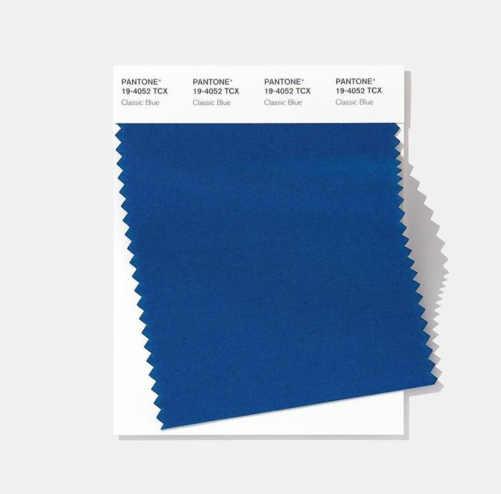
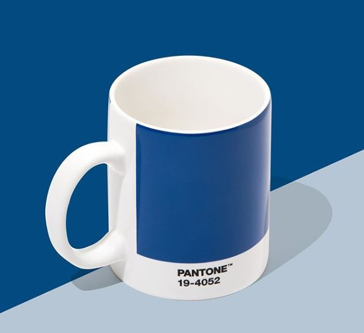

In this year of 2020 Pantone is 19-4052 Classic Blue.
Instilling calm, confidence, and connection, this enduring blue hue highlights our desire for a dependable and stable foundation on which to build as we cross the threshold into a new era.
 | Heading | ||
|---|---|---|
| Column 1 | Column 2 | Column 3 |
| Cell Spanning in 3 Rows (2nd and 3rd merged) | Cell Spanning in 2 Rows (1st and 2nd Cell merged) | 1st Cell |
| 2nd Cell | ||
| 3rd Cell | ||
| 3rd Cell | 4th Cell |